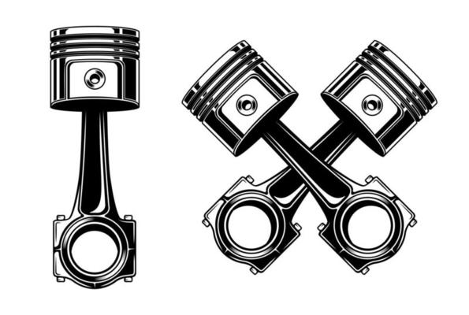
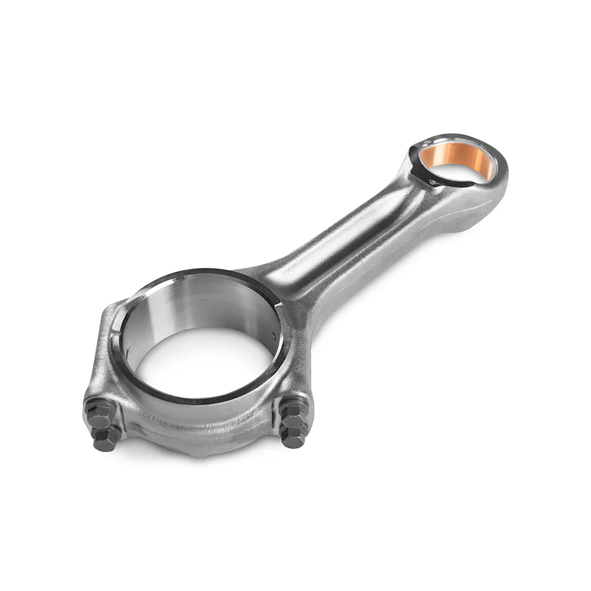
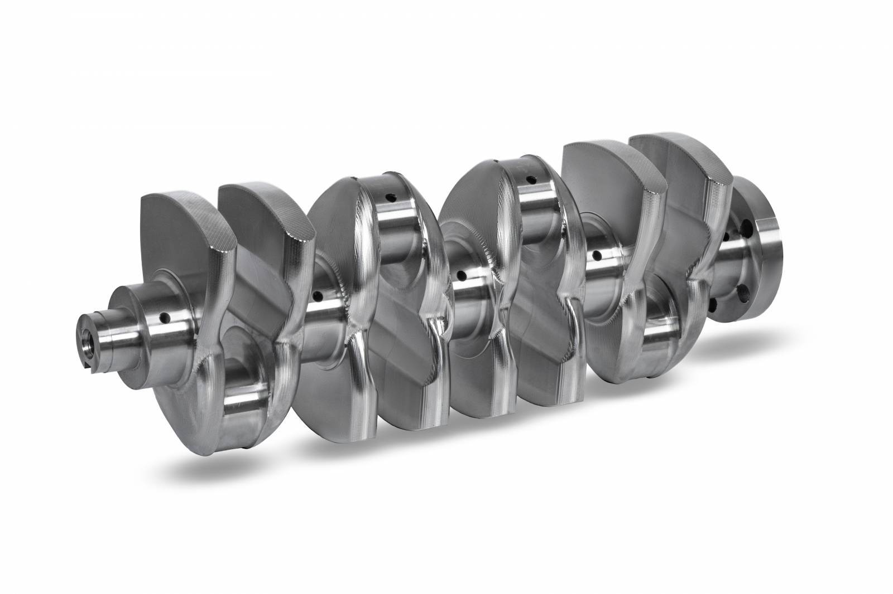
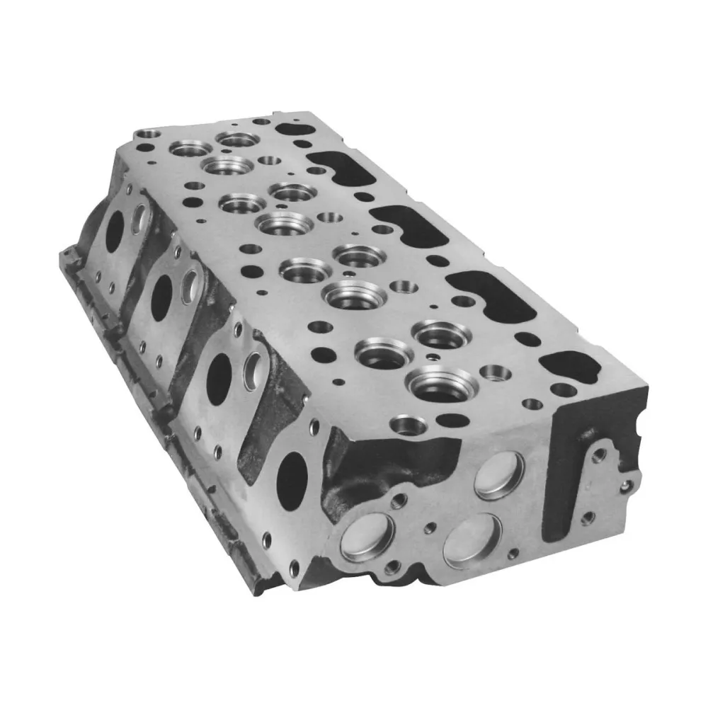
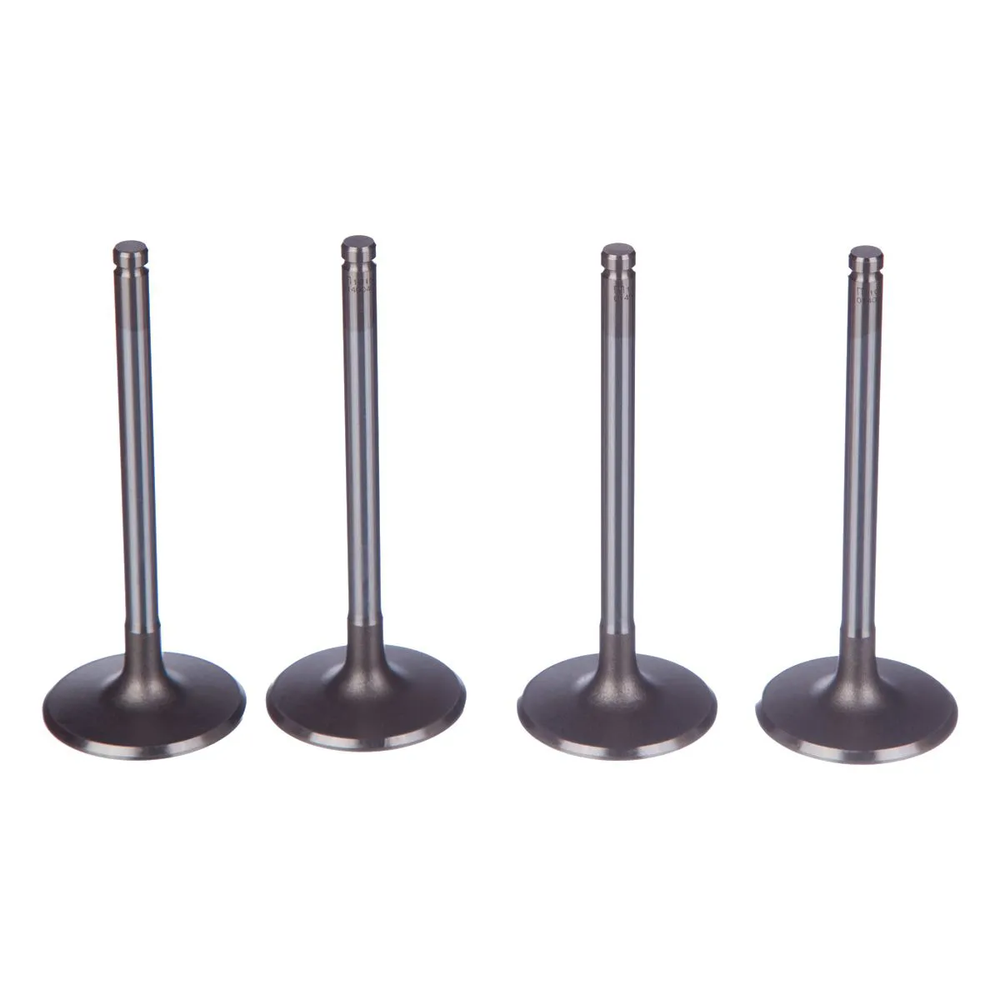
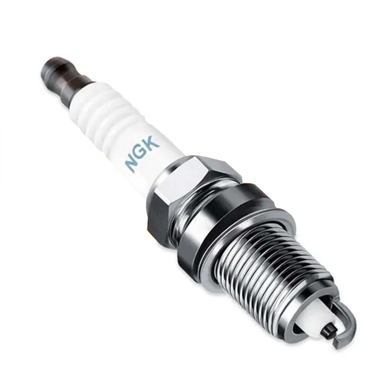
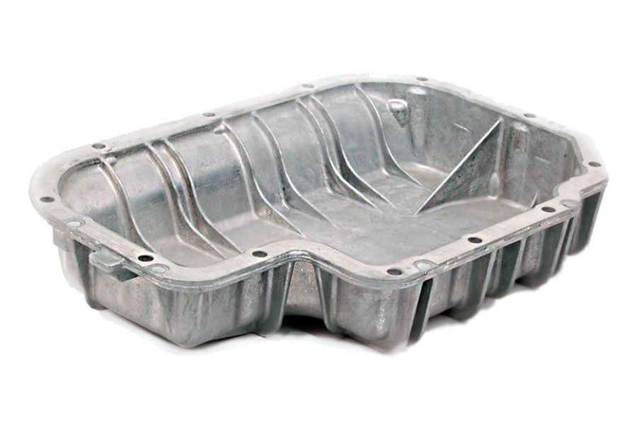

PARTES DO MOTOR

O motor de um carro é extremamente complexo, possuí diversas peças e partes diferentes que
em conjunto, fazem o carro andar. Algumas delas são:
1. Bloco do motor, a parte que sutenta todo o resto.

2. Pistão, que se move dentro dos cilindros impulsionado pelos gases queimados.

3. Biela, a haste que faz ligação do pistão com o virabrequim.

4. Anéis de pistão, que tem a função de fazer a vedação "deslizante" entre a o pistão e o cilindro.

5. Virabrequim, uma peça giratória composta por várias articulações.

6. Cabeçote, a tampa do bloco, que cobre a área dos cilindros e pistões.

7. Válvulas de comando, os componentes que controlam a entrada e saída de ar e do combustível nos cilindros.

8. Velas de ignição, são as responsáveis por gerar a fagulha inicial para a combustão.

9. Bicos injetores, um tipo de spray que mistura o ar com o combustível no motor.

10. Cárter, local onde é guardado o lubrificante do motor.

FUNCIONAMENTO DO MOTOR
O motor a combustão, como o próprio nome diz funciona com a combustão de um combustível. Para que essa
combustão ocorra é necessário oxigênio, vindo do ar, e uma fagulha. O ar e combustível que entram no motor
são filtrados por ele. O combustível é distribuido pela flauta chegando ao bico injetor, que faz com que
o ar e o combustível se misturem muito bem.

Após passar pelo bico injetor, o combustível chega as válvulas, peças que iram abrir e fechar, liberando
o combústivel no tempo certo para entrar nos cilindros. O cilindro é o local onde ocorre a combustão, grande parte
dos carros possuem quatro deles. Os antigos carros de seis "canecos" são aqueles que possuiam seis cilindros em
seu motor. Dentro dos cilindros existe o pistão, que se move para cima e para baixo dentro deles.
Dentro dos cilindros ocorre quatro tempos para a combustão. 1. Admissão: as válvulas abrem e o pistão abaixa
para que o combústivel entre. 2. Compressão: as válvulas fecham e o pistão sobe, apertando a mistura de ar com
combustível. 3. Combustão: a vela solta uma faísca e faz com que o combustível queime, empurrando o pistão para
baixo. 4. Escape: o pistão sobe e as válvulas de escape abrem, removendo a fumaça de dentro do cilindro.
A fumaça liberada pelas válvulas de escape são coletadas por canos, que levam a um abafador, que reduz o
barulho produzido. Após isso a fumaça segue pelo escapamento para fora do carro. Seguindo do pistão, existe uma
peça chamada biela presa nele que sobe e desce, e embaixo da biela está o virabrequim. O virabrequim é como uma
manivela que comporta as bielas e transforma o movimento de vai e vem em um giro. Esse movimento de giro é acoplado
em uma embreagem e é transmitido por outras estruturas até a roda.
O giro do virabrequim também é ligado a uma correia e é importante para o funcionamento de outras duas coisas
muito importantes. O compressor do ar condicionado, indispensável para o seu funcionamento e o alternador do carro, que
carrega sua bateria e traz energia elétrica a ele.